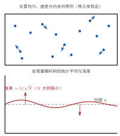

统计规律与等几率假设
一句话定义
统计规律是大量分子集的宏观量对其微观量求统计平均所遵循的规律；等几率假设则是”微观状态等概率”的出发点，是统计规律成立的地基。
定性
把”统计规律”想成一枚硬币。
抛一枚硬币，结果不确定——正面反面都有可能，谁也无法预言单次。可你要是抛一万次，正面数会稳定地落在五千上下，误差极小，而且是”越抛越接近一半”。单个事件无规、整体表现确定，这就是统计规律最朴素的样子。气体分子同此一理：单看一个分子，它下一秒在哪、速度多大，完全无规、无法预言；但 个分子合起来，温度、压强这些宏观量却稳得惊人。
这里还藏着第二个地基——等几率假设。凭什么断言”抛正面的概率约一半”？因为我们假设硬币正反面机会均等。分子同理：凭什么说”分子朝上飞的概率等于朝下飞的概率""停在容器中间的概率等于停在角落的概率”？靠的就是”分子所处微观状态等概率”这条假定。它不证明，而是作为统计处理的出发点——正如”硬币均质”是该实验室统计的前提。
反直觉的点：从”无规”产生”确定”，靠的不是消除随机，而是海量随机互相抵消。 单次抛硬币的不可预言，换成万次抛掷就成了可精确估计的确定性。这正是统计规律的灵魂——它把”不可知的个体”转化成”可精确预测的整体”，是气体动理论敢用几个宏观量描述亿万分子的底气。

图：大量分子在容器内无规分布，位置与速度方向各方向等概率；宏观量（压强、密度）为统计平均，相对涨落随分子数增大而趋近零。
数学表达
统计规律的核心是”宏观量 = 微观量的统计平均”。设某微观量 （如单个分子的速度、动能），其宏观量 由大量分子求平均：
这里 是分子总数（）， 是第 个分子的微观量。分子数是天文数字，所以 会稳定到平均值附近。
衡量”平均值的可靠程度”用相对涨落（标准差与平均值之比）：
是标准差。 越大，相对涨落越小； 时 ，涨落几乎为零。这就是”海量平均导致确定”的定量来源。
等几率假设的数学表达：对微观状态，每个状态出现的概率相同。对连续分布（如速度方向），则是均匀性——分子速率大小与方向在等几率前提下，按统计概率分布，最终导出麦克斯韦速率分布等具体规律。这里要看清结构：等几率不是”均匀平均”的结论，而是它的出发点。
关键性质
-
宏观量是统计平均，不是简单求和。 压强、温度是亿万分子微观量的平均，而非某一分子的属性。为什么：单个分子每时每刻在变，唯有平均才稳定，才能对应仪表上那个”确定读数”。
-
个体无规、整体确定。 单分子行为不可预言，整体却呈现稳定规律。为什么：这正是海量随机叠加的结果——个体随机性在巨大样本平均中被”统计淹没”，剩下确定的平均。
-
涨落随 增大而减小。 相对涨落约 ，分子越多越精确。为什么：标准差的增长比平均值慢，大量独立随机量求和时，相对涨落被 “稀释”。所以气体量越大，状态参量越稳定。
-
统计规律具有”宏观确定性”与”微观概率性”的双重面貌。 它既不是纯粹的决定论（微观不决定），也不是纯粹的无序（宏观可预测）。为什么：因为当微观自由度被平均掉后，只剩下统计上的整体行为。这使它区别于力学规律（决定性）与纯随机现象（无规律）。
-
适用范围覆盖平衡与涨落两个层面。 统计规律既给出平衡态的平均行为，也预测偏离平均的涨落。为什么：平均值尽管确定，但并非绝对，总有微小偏离；统计规律同时管辖”平均值”和”偏离的大小”。这是它比”平均”更丰富的地方。
推导
现在把”为什么海量无规会凝结成确定性”真正推出来——不是背结论，而是看清 从哪里来。
先抛问题：单个分子的运动毫无规律，为什么亿万个分子合起来，温度、压强就”确定”了？这份确定到底”确定”到什么程度？
设物理场景。取 个独立随机运动的分子，观察某一宏观量 （例如容器某一小区内的分子数、或每秒撞壁的分子数）。每个分子对这个量贡献一个随机微元。
列依据。三条事实：一是各分子运动相互独立（无相互作用，恰好用上理想气体模型）；二是每个分子的贡献是同分布的随机量（都服从同样的无规规律）；三是我们要的是大量分子的总和。
逐步演绎。先看单个随机量的起伏。一个随机量 有平均值 和标准差 —— 刻画它”偏闹腾”的程度。现在求 个”同分布、相互独立”的随机量之和 的波动。因为独立，它们各自的起伏不会整齐地同涨同落，而是相互抵消——一个偏高时另一个往往偏低，偏向互相抵消。数学上，独立随机量的方差可加：
所以总和的标准差不是 （那样就整齐地放大），而是
总和随分子数只按 增长。再看平均值 的相对涨落：
回头看。关键就在 与 的悬殊：分子数按 涨，波动只按 涨，所以平均值的相对波动被 狠狠稀释。 时 ，意味着测量值偏离平均值只有 (10^{-11}) 的量级——那点偏离在仪表精度下等于零。所以”确定”的根源不在单个分子，而在大量独立随机量的起伏互相抵消。这是中心极限定理的物理面孔：只要样本海量且独立，总和就几乎精确地冻结在均值附近。统计规律的”确定性”，就是被这个 撑起来的。
为什么重要
统计规律是气体动理论的整个方法论根基。它回答了热学最基础的问题——“凭什么用少数几个宏观量描述亿万分子、还准得惊人”——答案是：靠海量无规的统计平均。
它直接撑起后续所有公式：压强公式 是分子撞壁动量的统计平均；温度公式 是分子动能的统计平均；麦克斯韦速率分布是速度分布的统计概率；能量均分是各自由度的统计平均。没有统计规律，这些公式一条都立不住。
它的工程地位同样重要：正因为统计规律可靠（涨落 量级），工程上才敢把气体宏观量当作精确常数用于设计，不必担心”这次测运气好不好”。它也给出了一个真实边界——当分子数变少时，确定性退化：微球、纳米量级的气体、粉尘悬浮，涨落显著，测量不可重复，此时不能再用单一的宏观量描述，必须正视涨落。
适用条件
统计规律不是无条件成立，它的前提正是”大量+独立”：
- 分子数足够大。 只有 海量， 才趋近零、涨落可忽略。 小到几百几千时，涨落就明显，宏观量不稳定。
- 微观个体相互独立。 各分子随机运动彼此独立、互不牵制，方差才能相加、波动才会抵消。相互作用强的系统，独立假设受损，统计规律需修正。
- 系统处于（或接近）平衡态。 统计规律描述的是稳定平均；系统若剧烈非平衡、宏观量本身在巨变，谈”稳定平均”就没有意义。
边界要说清：统计规律在宏观、大量、平衡三个条件下才表现出”宏观确定”。真实边界是——分子数不够大（微尺度、稀薄到极致的真空、气溶胶）、非平衡（激波、湍流、快速过程）、强关联（低温量子气体）这些情形下，涨落和关联不可忽略，需改用涨落理论、输运理论或统计力学更精细的手段，不能只靠”平均+忽略涨落”。
边界与误区
-
误区一：统计规律=完全不规律、什么都说不准。 根因：看到”统计""概率”，就以为结论含糊、不可靠。正确区别：统计规律说的是平均值极其确定，模糊的只是单个微观个体的行为。宏观层面它反而最精确（涨落 ），比任何单次预测都可靠。
-
误区二：等几率假设是”证明出来的”。 根因：把”等几率”当成可以从其他定理推出来的结论。正确区别：等几率是统计处理的出发点/假设，不是推导产物。它之所以可信，是因为大量粒子无规、各方向各位置”无偏好”，且由此推出的结果（如压强、温度公式）与实验吻合——是用结果去检验这个出发点，而不是从前提里”证”出它。
-
误区三：把统计规律和”力学决定论”对立成”非此即彼”。 根因：觉得”要么都是决定论，要么都是概率”。正确区别：统计规律是分子层面各向无规、宏观层面精确的统摄性规律，它并不否定分子遵从力学，而是说在巨大自由度下力学细节被平均掉。它既非纯决定也非纯随机，是两者在宏观世界的统一呈现。
对照
最容易和统计规律混的是单个分子的力学规律（）。两者只用一个关键差异区分：
力学规律决定”个体”，统计规律描述”整体”。
单个分子的运动完全由受力决定，是决定性的、可精确预言（）；而亿万分子构成的系统，个体行为无规、宏观行为却确定，这就是统计规律。用一个记忆点：问”某一个分子”用力学；问”一罐气”用统计。热学和气体动理论之所以用统计而不是去解 个牛顿方程，正是因为后者的巨大自由度让确定性丢失、让统计性显现。
例子
我们抛一枚硬币，把统计规律落到数字上。
抛一次，正反面各半、不可预料。抛 次，正面数是一个随机量。设单次正面概率 ，则 次正面数期望 ，标准差 。相对涨落：
抛 100 次：期望正面 50 次，标准差约 5 次，相对涨落 10%——结果在 45~55 间，仍有点晃。抛 次：期望 5000，标准差 50，相对涨落 1%——开始稳定。抛 次：期望 500000，标准差 500，相对涨落 0.1%——已经非常确定。
分子气体的道理一模一样：把分子数当抛掷次数。气体里有 个分子，，所以压强、温度的相对涨落在百亿分之一量级。若你把体积缩小到只剩 个分子（微米级微小空间），涨落就升到 0.1%——在普通仪表下仍不妨事，但若到 个分子（纳米尺度），涨落高达 3%，此时”微观量确定”的图景就瓦解，气体状态不再能用单一平衡态说了。
反推工程含义：宏观尺度下统计规律给了我们近乎精确的确定值，但任何”减弱到微尺度”或”减少分子数”的操作，都会把涨落放大、把确定性吃掉。 涉及微机电系统（MEMS）、纳米孔、极稀薄气体的工程，必须把涨落作为设计约束，而不是默认”气体状态是精确常数”。这就把统计规律从”课本概念”推向”可量化的工程判断”。